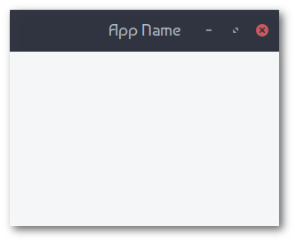
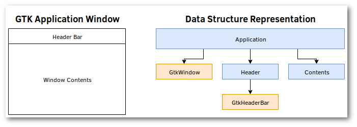

Window With A Header Bar

In this chapter, we will create a simple GTK application that features a header bar. This will serve as an introduction to the basics of creating a GTK application data structure to contain the widgets that you will later program, as well as spawning a GTK window and running your application.
Before continuing, do ensure that you have added the gtk crate to your Cargo.toml file, and additionally have specified at least
v3_14as a feature to enable with the gtk crate.
Creating the GTK Application Structures
The following diagram lays out how we will construct our GTK application data structure. One does not have to follow this diagram to achieve the same result, but structuring your UI struct into a hierarchy of partitions can be helpful to the mind.

As we can see, we will need to create a structure that has a GtkWindow and a Header.
# #![allow(unused_variables)] #fn main() { extern crate gtk; use gtk::*; use std::process; pub struct App { pub window: Window, pub header: Header, } #}
The Header is another structure that we will create, which will contain the GtkHeaderbar and all of the widgets within that header bar.
# #![allow(unused_variables)] #fn main() { pub struct Header { pub container: HeaderBar } #}
Creating the UI with Rust
Next is to generate our UI with Rust, and store it in the newly-defined structures.
First is the App structure, which will be contain the overall structure of our UI in a well-defined hierarchy of data structures and associated data. The following code example provides in-line comments to describe each of the methods that are being used to configure it.
We will be creating the GtkWindow that we will attach every UI element to, the Header
structure that will contain our GtkHeaderBar, and programming the exit function within the
window. It's also important that we set a title for the window, the wmclass which will be
seen by window managers, and setting the icon to display within the window manager via the
Window::set_default_icon_name() function.
# #![allow(unused_variables)] #fn main() { impl App { fn new() -> App { // Create a new top level window. let window = Window::new(WindowType::Toplevel); // Create a the headerbar and it's associated content. let header = Header::new(); // Set the headerbar as the title bar widget. window.set_titlebar(&header.container); // Set the title of the window. window.set_title("App Name"); // Set the window manager class. window.set_wmclass("app-name", "App name"); // The icon the app will display. Window::set_default_icon_name("iconname"); // Programs what to do when the exit button is used. window.connect_delete_event(move |_, _| { main_quit(); Inhibit(false) }); // Return our main application state App { window, header } } } #}
And then there is our Header structure, which for now, will only contain the GtkHeaderBar. It is important to set the title of this header bar, if you want a title to be displayed, and to also enable window controls on it, as this is disabled by default.
# #![allow(unused_variables)] #fn main() { impl Header { fn new() -> Header { // Creates the main header bar container widget. let container = HeaderBar::new(); // Sets the text to display in the title section of the header bar. container.set_title("App Name"); // Enable the window controls within this headerbar. container.set_show_close_button(true); // Returns the header and all of it's state Header { container } } } #}
Initializing and Launching the Application
Now that we are ready, we simply need to initialize GTK, create our GTK application structure, show all of the widgets within that structure, and start the GTK main event loop.
fn main() { // Initialize GTK before proceeding. if gtk::init().is_err() { eprintln!("failed to initialize GTK Application"); process::exit(1); } // Initialize the UI's initial state let app = App::new(); // Make all the widgets within the UI visible. app.window.show_all(); // Start the GTK main event loop gtk::main(); }
Once the main thread has entered the event loop, it will poll across each of the widgets for
actions that have been triggered, such as the connect_delete_event() method that we used
above to program the exit button to exit the program.
The Result
With all of this complete, you should now have a program up and running that looks like so.